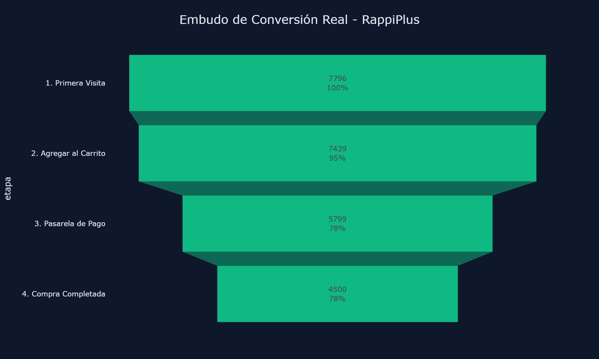

📊 Auditoría de Suscripciones y Retención de Usuarios (RappiPlus)
SQL • Python • Test A/B⚡ El Problema
El programa de suscripciones de RappiPlus presentaba inconsistencias financieras y se sospechaban fugas de capital no identificadas en el flujo transaccional.
🎯 El Objetivo
Auditar la salud financiera, mapear el embudo de conversión y localizar con precisión matemática dónde se generaban las pérdidas monetarias.
💡 Hallazgos Clave del Análisis
- Fuga de 22.05% Identificada al pasar del carrito (7,439 usuarios) a la pasarela de pago (5,799 usuarios).
- Conversión Total: 57.72% De los 7,796 usuarios iniciales, solo 4,500 completaron la compra final de la suscripción.
- p-value: 0.416 El Test A/B de la nueva interfaz de checkout no arrojó diferencias estadísticamente significativas (alfa = 0.05).
📊 Comportamiento del Embudo (Funnels)

🎯 Recomendaciones de Negocio Basadas en Datos
🚫
Descartar despliegue global de interfaz: Dado que p-value > alfa, la diferencia observada del 0.6% no justifica el gasto técnico. Es mejor iterar el diseño o buscar fricciones en pasarela.
📢
Estrategia de retención en cohorte crítico: Lanzar notificaciones push dirigidas 3 días antes del cobro de renovación del segundo mes para salvar el 15% de usuarios que abandonan.